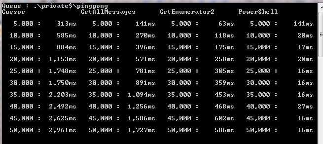

Recently I needed to create a means of visually monitoring the number of messages in multiple message queues. This should of been relatively simple,
create a UI to display the result from myMessageQueue.Count(), however the count method does not exist as part of the message queue class.
When I searched for a solution most of the comments where using cursors. This was the method that I initially used but when I had about > 35,000 messages I found the count to be wildly erratic. The more messages you have in your queue the longer this method will take to count.
For a full description of using cursors with MSMQ have a look on Microsoft http://support.microsoft.com/kb/178516.
private MessageQueue _messageQueue;
private int CountCursor()
{
_messageQueue = new MessageQueue(".\\private$\\pingpong", QueueAccessMode.Peek);
int count = 0;
Cursor cursor = _messageQueue.CreateCursor();
Message m = CursorPeekWithoutTimeout(cursor, PeekAction.Current);
if (m != null)
{
count = 1;
while ((m = CursorPeekWithoutTimeout(cursor, PeekAction.Next)) != null)
{
count++;
}
if (m != null) m.Dispose();
}
cursor.Dispose();
return count;
}
protected Message CursorPeekWithoutTimeout(Cursor cursor, PeekAction action)
{
Message ret = null;
try
{
ret = _messageQueue.Peek(new TimeSpan(1), cursor, action);
}
catch (MessageQueueException mqe)
{
if (mqe.MessageQueueErrorCode != MessageQueueErrorCode.IOTimeout)
{
throw;
}
}
return ret;
}
GetAllMessages returns a static copy of the messages in the queue, this is fine for small one off counts. In the real world you could have several hundred thousand large
messages in the queue so to reduce the amount of information bought back we need to set up a message filter. The more messages you have in your queue the longer this method
will take to count.
var _messageQueue = new MessageQueue(".\\private$\pingpong", QueueAccessMode.Peek);
var countFilter = new MessagePropertyFilter
{
AdministrationQueue = false,
ArrivedTime = false,
CorrelationId = false,
Priority = false,
ResponseQueue = false,
SentTime = false,
Body = false,
Label = false,
Id = false
};
_messageQueue.MessageReadPropertyFilter = countFilter;
return _messageQueue.GetAllMessages().Length;
GetEnumerator2 returns a dynamic list of messages in the queue. The more messages you have in your queue the longer this method will take to count.
var _messageQueue = new MessageQueue(".\\private$\pingpong", QueueAccessMode.Peek);
var x = _messageQueue.GetMessageEnumerator2();
int iCount = 0;
while (x.MoveNext())
{
iCount++;
}
return iCount;
This is by fastest method by far taking about 20ms regardless of how may messages there are to count. This is the only method for counting the message queues on other machines that you have access to.
private int GetPowerShellCount()
{
return GetPowerShellCount(".\\private$\pingpong", Environment.MachineName, "", "");
}
private int GetPowerShellCount(string queuePath, string machine,string username, string password)
{
var path = string.Format(@"\\{0}\root\CIMv2", machine);
ManagementScope scope;
if (string.IsNullOrEmpty(username))
{
scope = new ManagementScope(path);
}
else
{
var options = new ConnectionOptions {Username = username, Password = password};
scope = new ManagementScope(path, options);
}
scope.Connect();
if (queuePath.StartsWith(".\\")) queuePath=queuePath.Replace(".\\",string.Format("{0}\\",machine));
string queryString = String.Format("SELECT * FROM Win32_PerfFormattedData_msmq_MSMQQueue");
var query = new ObjectQuery(queryString);
var searcher = new ManagementObjectSearcher(scope, query);
IEnumerable<int> messageCountEnumerable =
from ManagementObject queue in searcher.Get()
select (int)(UInt64)queue.GetPropertyValue("MessagesInQueue");
//IEnumerable<string> messageCountEnumerable =
// from ManagementObject queue in searcher.Get()
// select (string)queue.GetPropertyValue("Name");
var x = messageCountEnumerable.First();
return x;
}
I decided to create a test that would count the messages and count the timing for the messages to be counted. To run the tests included in source code you need to create a private MSMQ on your machine, the name of the queue does not matter as the application will use the first private queue it finds. The test application needs to run as administrator as you will be purging the message queue before the tests start.
